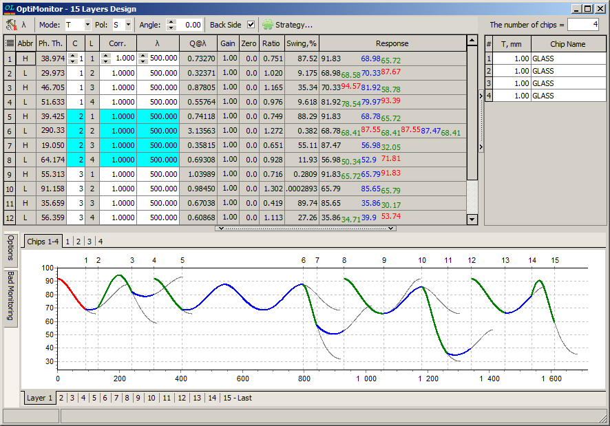
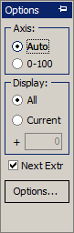
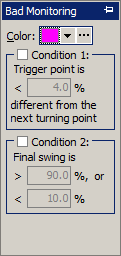
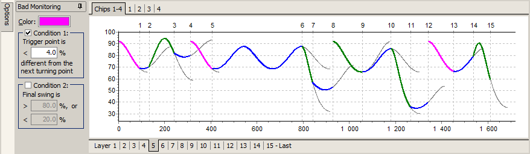

OptiLayer Monitor
OptiLayer Monitor
Navigation: OptiLayer Menu Commands > Results Menu >
OptiLayer Monitor
` <idh_menu_results.html>`__ ` <idh_menu_results.html>`__ ` <automatic_monitoring_strategie.html>`__
Creating a good set of instructions for an optical monitoring system can be a tedious task. The OptiLayer Monitor option, accessible from the / Results menu, enables the user to create a monitoring spreadsheet for the design currently loaded in memory. The OptiMonitor dialog window allows the user to specify the parameters required for this purpose. The OptiMonitor window is divided into three sections. The proportions of the three sections in the monitor window can be adjusted by placing the mouse on the dividing bar between the sections. When this is done, a set of short parallel lines with outward-pointing arrows appears. Clicking with the left mouse button and dragging the divider bar will allow you to adjust the proportions of the OptiMonitor window. The Monitoring Spreadsheet occupies the left upper part of the window. The Witness Spreadsheet occupies the right upper part of the window; it is used to specify information about the witness chips. The Graphic Display occupies the lower part of the window; it displays a graphical representation of the reflection from (or transmission through) the witness chip as the layers of the coating are being deposited. The graph emulates the theoretical response of the optical monitor system during the deposition process.

The Monitoring Spreadsheet
The Monitoring Spreadsheet consists of 15 columns (some columns are hidden by default; use the top-left grid corner to activate a pull-down menu controlling the visibility of individual columns).
The first two columns show layer material abbreviations (Abbr) and layer physical thicknesses (Th.) for the design loaded in memory.
The 3rd column (C) indicates the number of the witness chip on which the corresponding design layers will be deposited.
The 4th column (L) displays the number of design layers to be deposited on each particular chip, starting from 1. The correspondence between the design layers and witness chips is set in the Witness Spreadsheet located in the right upper part of the window (see below).
In the 5th column, the user can specify correction factors (Corr) representing the ratios between the physical thicknesses of layers on a witness chip and the actual physical thicknesses of the material being deposited on the actual parts being coated. Note that default correction factors are equal to 1.
The 6th column (λ) is used to specify the wavelength at which the optical monitoring is being done for each specific layer. It is possible to use the / Monitoring Wavelength Adjustment option invoked by clicking the button λ in the left upper corner of the window.
The 7th column (Fixed) allows the user to freeze the layer and exclude it from strategy generators.
The 8th column (Q@λ) is used to represent the quarter-wave optical thickness at the λ monitoring wavelength.
The 9th column (Gain) displays scaling factors obtained after the use of the / Gain and Zero option. These values can also be edited directly in the Monitoring Spreadsheet.
The 10th column (InR) displays Initial Readouts values.
The 11th column (Zero) represents Zero Offset values entered with the help of the Gain and Zero option. These values can also be edited directly in the Monitoring Spreadsheet.
The 12th column (Δd) shows overshoot values. When a non-zero overshoot value is specified, the monitoring spreadsheet is corrected for these values.
The 13th column (Ratio) displays the ratio between the values of the spectral response at the end and the beginning of each layer deposition.
The 14th column (Swing, %) displays the signal swing value determined as the ratio of the difference between the trigger-point signal value and the maximum of the signal to the signal amplitude. Signal amplitude is the difference between the signal maximum and minimum values. If a maximum or minimum of the signal, or both, are not available during layer deposition, OptiLayer considers a sufficient virtual increase in the layer thickness until the required extrema are located.
The 15th column (Response) shows more detailed information on the spectral response during the layer deposition. The first and last values in this column correspond to the transmittance/reflectance of the witness chip at the beginning and end of the layer deposition, respectively. Between these values, all spectral response maxima and minima that occur during the layer deposition are shown. Spectral response maxima are shown in red while spectral response minima are shown in green. For additional details on the spectral response, refer to the plots below.

Note: It is possible to control the visibility of columns using the button at the top-left corner of the spreadsheet. The visibility of the columns is preserved between OptiLayer sessions. See also / Fixing Wavelength of Some Layers.
General settings related to the physical configuration of the monitor system are made in the upper-left corner of the monitoring spreadsheet. The user can choose the Mode of the spectral response (T for transmittance or R for reflectance). The polarization of the light on the witness chip (monitor glass) is specified in the Pol field, and the angle of incidence at which the light from the monitor source hits the witness chip is set in the Angle field. In the case where the monitoring is done in reflectance, the user should uncheck the Back Side box if the reflectance from the Back Side of the witness chip is suppressed.
Graphical representation
The theoretical spectral response of the monitor system is plotted in the bottom portion of the OptiMonitor window. With the help of the Display control, the user can choose whether to show the plot for one layer only (Current) or for all the layers at once (All). To easily distinguish between the layers, the responses for different layers are colored alternately. The Axis control allows you to select an appropriate scale for the response plot. The numerical values of the plotted response characteristic can be found in the monitoring spreadsheet in the upper part of the window (columns Ratio and Response).

This control can be opened by hovering the mouse over the Options field to the left of the graphical representation of the monitoring signals. The Bad Monitoring control allows one to visualize layers having a monitoring signal with bad quality for reliable monitoring purposes. It can also be opened by hovering the mouse over the left side of the plots window.

Selecting different conditions, corresponding levels, and the visualization color, it is easy to visualize layers with bad monitoring conditions, as shown in the illustration below.

The Witness spreadsheet - setting up the witness chip parameters
The choice of which type of material to use for a witness chip, how many chips to use to monitor the deposition of a design, and how many layers should be deposited on each chip is essential for the development of a successful monitoring scheme. These parameters are selected in the Witness spreadsheet in the upper right corner of the Monitoring window. Please note that two different strategies of chip management are supported. If Permit Reusing of Chips is selected (see / Miscellaneous Monitoring Options), then repetitive use of chips is allowed, and the appearance of the monitoring spreadsheet is adjusted accordingly. The chip material can be chosen from any of the substrate materials in the current Problem directory. The available materials can be reviewed by clicking the small arrow to the right of the Def Chip field in the upper right-hand corner of the OptiMonitor window. This will open a small popup window. Use the scroll bar to review all the material choices and double-click on the material you will use for the monitor chip. The first column in the Witness spreadsheet displays the witness chip number, with chip #1 being the chip that the first layer is deposited on. The second column in the Witness spreadsheet, labeled L, displays the number of layers to be deposited on the corresponding witness chip. The program always assumes by default that all layers in a design will be deposited on one witness chip. This is indicated by the fact that initially chip #1 has a number in column L that is the same as the total number of layers in the design. In most cases, the default choice will not be correct. Enter the number of layers you want to deposit on chip #1 in column L and press the Enter key. A second chip will automatically be created with the remaining layers of the design assigned to it. Enter the number of layers to be deposited on the second chip in column L and repeat the process described above until all the layers in the design have been assigned to a witness chip. The third column of the Witness spreadsheet is labeled with the letter T, signifying the thickness of the witness chip. You can also appropriately modify the thicknesses of each chip. The thickness of the witness chip is important if the material displays any significant absorption.